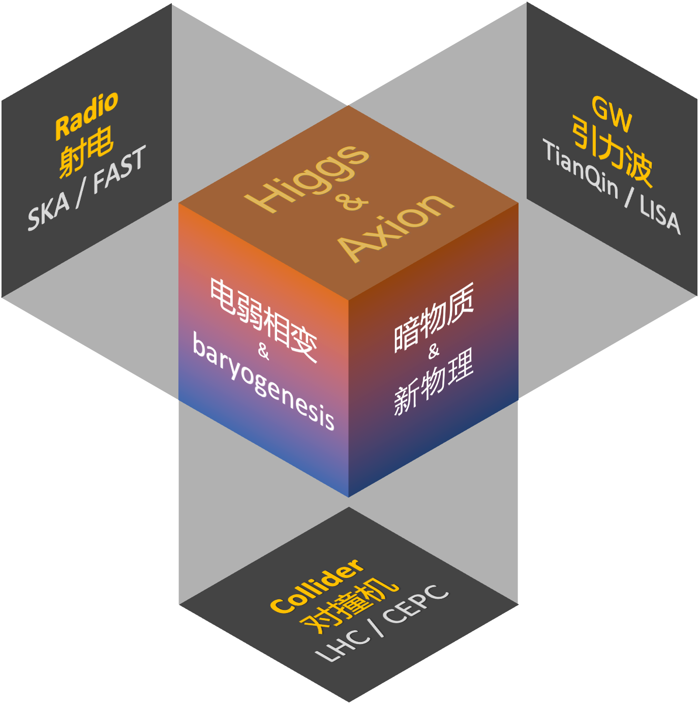
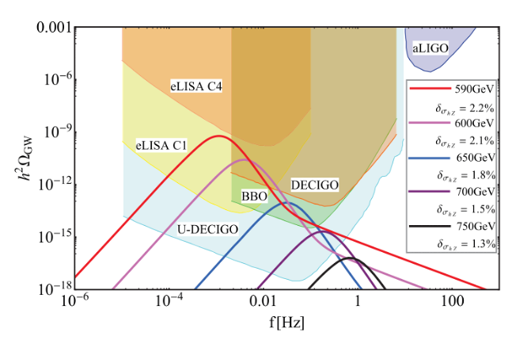
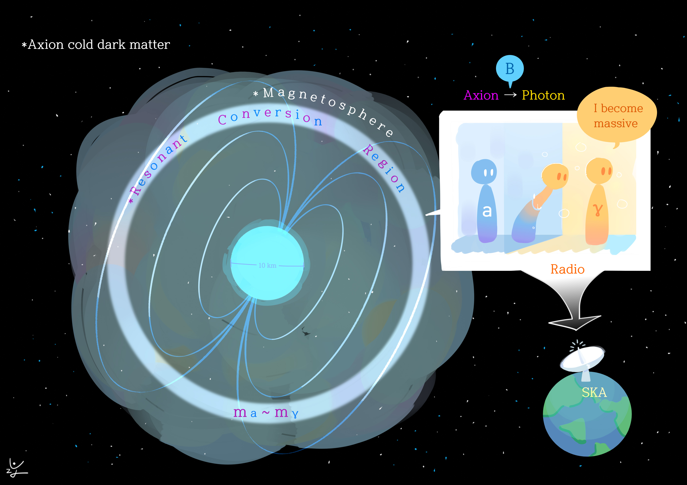
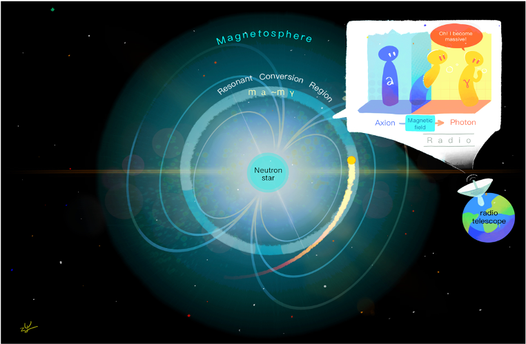
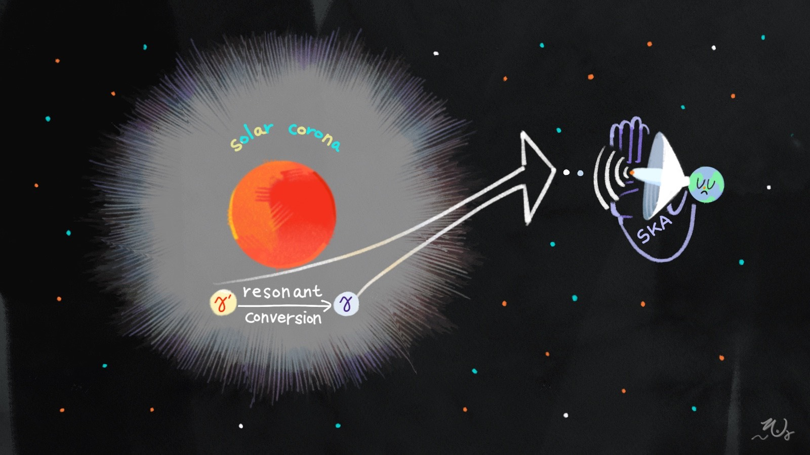

简介
副教授，博导，2021年以中山大学“百人计划”回国入职。主要从事粒子宇宙学、引力波物理和粒子天文学的研究。在国际主流期刊发表论文30多篇(主要Phys. Rev. D、 Phys. Rev. Lett.), 其中20篇为唯一通讯或者第一作者，总引用1000+, 8篇50+(Inspires hep) ,3篇被ESI标记为高引文章(2019,2020,2021)。曾获李政道先生设立的”君政学者”的称号。基于引力波和对撞机互补的研究希格斯粒子和新物理的研究工作，获得中国博士后一等(2016)基金和特等(2017)基金。
研究领域：引力波物理，粒子宇宙学，粒子天文学，主要包括宇宙正反物质不对称性起源、暗物质、希格斯(Higgs)物理、轴子(axion)物理、对撞机唯象学，QCD圈图计算，有效理论和引力波宇宙学。特别是围绕天琴空间引力波实验，研究粒子宇宙学引力波信号的精确预言和提取识别。

研究工作
长期围绕基础物理最重要的标量粒子Higgs(axion), 研究如何通过(天琴/LISA)引力波信号, (FAST/SKA)射电信号和(CEPC/LHC)对撞机信号去互补的探测Higgs(axion)的性质及其宇宙学效应, 特别是其在宇宙正反物质不对称性的产生和暗物质中的作用。
一类代表工作是首次提出用SKA、FAST上的射电信号寻找axion和dark photon暗物质的新方法。
另一类代表工作是用天琴、LISA上的相变引力波信号来研究希格斯物理、宇宙正反物质物质不对称性的起源、暗物质等新物理的系统研究。
论文列表 Inspire Page
代表论文
Fa Peng Huang; Youpin Wan; Dong-Gang Wang; Yi-Fu Cai;Xinmin Zhang;
Hearing the echoes of electroweak baryogenesis with gravitational wave detectors, Phys. Rev. D(rapid communication), 2016,94:041702.
Fa Peng Huang; Pei-Hong Gu; Peng-Fei Yin; Zhao-Huan Yu; Xinmin Zhang；Testing the electroweak phase transition and electroweak baryogenesis at the LHC and a circular electron-positron collider, Phys. Rev. D, 2016, 93:103515.
Fa Peng Huang; Jiang-Hao Yu；Explore Inert Dark Matter Blind Spots with Gravitational Wave Signatures, Phys. Rev. D, 2018, 98:095022.
Fa Peng Huang;Kenji Kadota;Toyokazu Sekiguchi;Hiroyuki Tashiro; The radio telescope search for the resonant conversion of cold dark matter axions from the magnetized astrophysical sources, Phys.Rev. D, 2018,97:123001
Fa Peng Huang; Zhuoni Qian; Mengchao Zhang ; Exploring dynamical CP violation induced baryogenesis by gravitational waves and colliders, Phys. Rev. D, 2018,98: 015014 .
Fa Peng Huang; Chong Sheng Li; Probing baryogenesis and dark matter relaxed in phase transition by gravitational wave and collide, Phys.Rev. D, 2017,96:095028
James H. Buckley;P. S. Bhupal Dev; Francesc Ferrer; Fa Peng Huang; Fast radio bursts from axion stars moving through pulsar magnetospheres, Phys. Rev. D, 2021,103: 043015
Haipeng An; Fa Peng Huang; Jia Liu; Wei Xue; Radio-frequency Dark Photon Dark Matter across the Sun,Phys.Rev.Lett.2021,126: 181102
经历
2006——2010，兰州大学物理科学与技术学院，理学学士
2010——2015，北京大学物理学院，理学博士
2015——2017，中国科学院高能物理研究所，博士后
2017——2019，韩国基础科学研究院，博士后研究员
2019——2021，美国圣路易斯华盛顿大学物理学院/麦克唐纳空间科学中心，博士后研究员
2021起，中山大学物理与天文学院一级副教授，博导
公共服务
- Physical Review Letters，Physical Review D, Chinese physics C，Int.J.Mod.Phys. A, Nuclear Physics B等国际高能物理杂志审稿人
所属学会
论文趣图
- Fa Peng Huang; Youpin Wan; Dong-Gang Wang; Yi-Fu Cai;Xinmin Zhang;
Hearing the echoes of electroweak baryogenesis with gravitational wave detectors, Phys. Rev. D(rapid communication), 2016,94:041702.

- Fa Peng Huang;Kenji Kadota;Toyokazu Sekiguchi;Hiroyuki Tashiro; The radio telescope search for the resonant conversion of cold dark matter axions from the magnetized astrophysical sources, Phys.Rev. D, 2018,97:123001

- James H. Buckley;P. S. Bhupal Dev; Francesc Ferrer; Fa Peng Huang; Fast radio bursts from axion stars moving through pulsar magnetospheres, Phys. Rev. D, 2021,103: 043015

- Haipeng An; Fa Peng Huang; Jia Liu; Wei Xue; Radio-frequency Dark Photon Dark Matter across the Sun,Phys.Rev.Lett.2021,126: 181102
